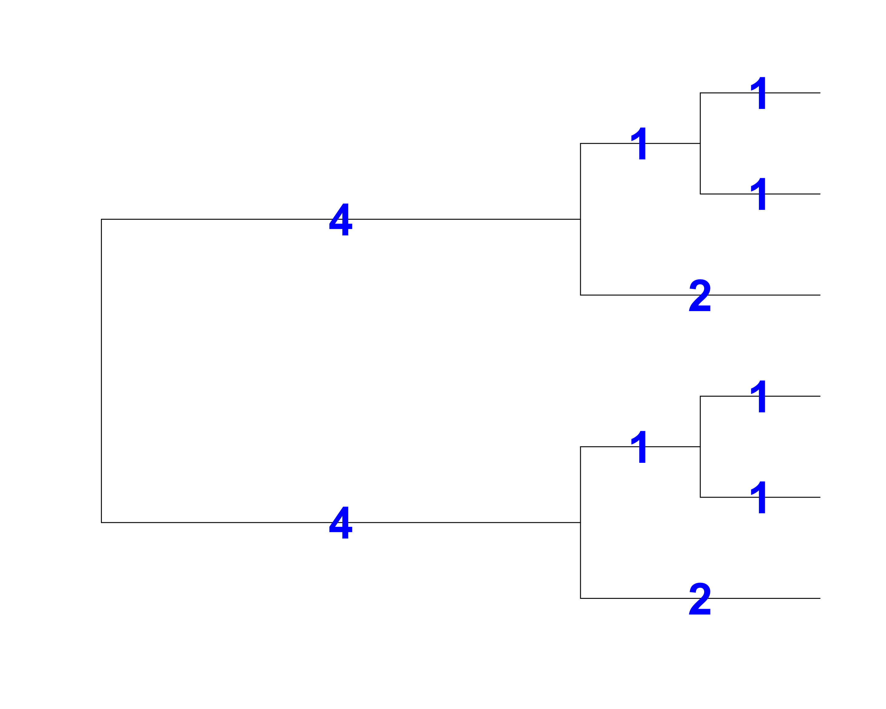
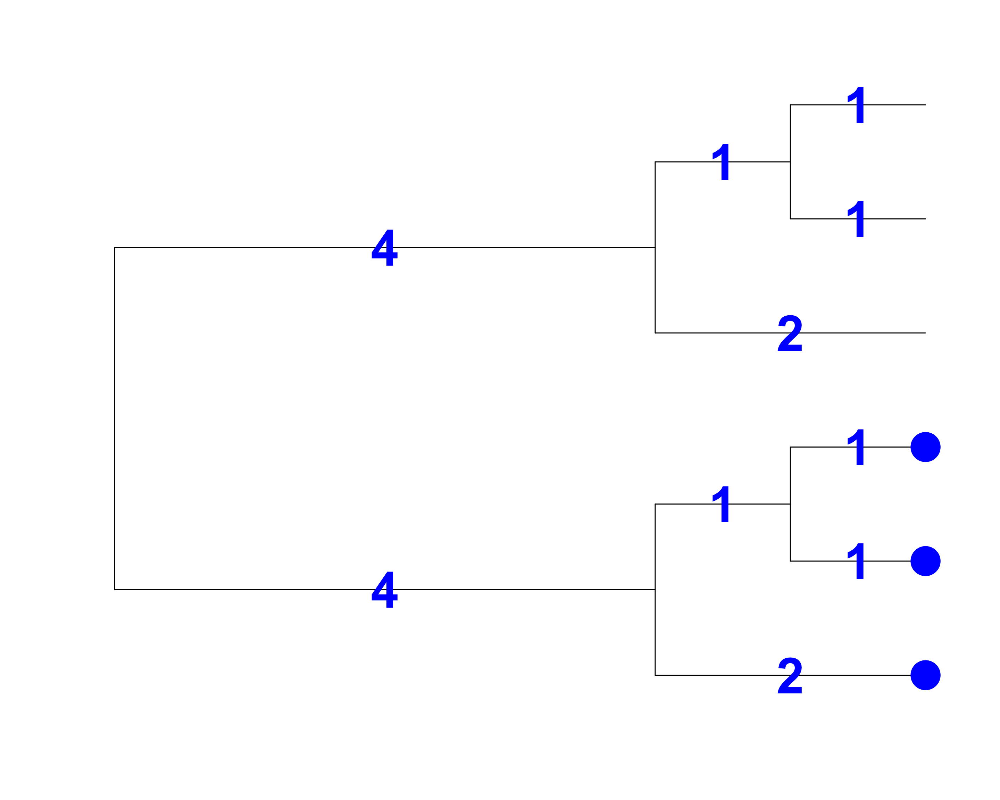

Phylogenetic diversity, functional diversity and trait-based approaches
üßëü誂Äçüíª Masatoshi Katabuchi @ XTBG, CAS
mattocci27@gmail.com
@mattocci
github.com/mattocci27/phy-fun-div
https://mattocci27.github.io
November 8, 2022XTBG AFEC
Objective
We Learn:
Why we use trait and phylogenetic diversity
How to calculate trait and phylogenetic diversity
Trait-based approaches
Community Assembly and Species Coexistence
For over a century, filed ecologist have been characterizing patterns in ecological communities and trying to draw theoretical inferences form the resulting data.
Central Questions:
Why do species occurs at the particular places?
Why do some pairs of species coexist while others not?
Environmental filtering:
Ecologically similar species should coexist in ecologically similar environments.
Limiting similarity:
Ecologically dissimilar species should coexist because too similar species competing for the same resources cannot stably coexist.
Neutral theory:
Dispersal and stochastic demographic processes explain species coexistence and species differences are not important.
How can we quantify ecological similarity of coexisting species?
How to quantify ecological communities üçÉ
Species
Species + Site information (1950s ~)
Species + Site information + Species information (2000s ~)
Assuming closely related species are more ecologically similar
Genus:species ratio: Relatedness as a substitute for ecological similarity
Community with 3 genus and 3 species (3:3) vs community with 1 genus and 3 species (1:3)
A high genus:species ratio indicates distantly related and ecologically dissimilar species coexist.
Limiting similarity
A low genus:species ratio indicates closely related and ecologically similar species coexist.
Environmental filtering
Genus:species ratio
The genus:species ratio type of study in plant community ecology started ~1910 and was popular until 1990’s
A large criticism of genus:species ratio analyses is that they do not take account for the different ages of genera and species
Two species in a relatively young genus may be expected to be more similar than two species in a relatively old genus.
Solution for the genus:species ratio problem = Use phylogenetic trees
Phylodiversity
In the 1990’s conservation biologists recognized the biodiversity is not only species diversity
Biodiversity has several axes or dimensions including genetic, taxonomic, phylogenetic and functional diversity
Phylodiversity
Phylogenetic diversity was first formalized by Dan Faith in 1992
He proposed a metic called PD that is also commonly referred to as Faith’s Index
Many additional metics have now been generated but this metic is still widely used, especially in the context of conservation Index
Faith’s Index (PD)

Total branch length = 18
PD is the sum of the lengths of all those branches that are members of the corresponding minimum spanning path
PD is the phylogenetic analogue of taxon richness and is expressed as the number of tree units which are found in a sample
PD will correlate with species richness
Faith’s Index (PD)

Total branch length = 9
Faith’s Index (PD)
Total branch length = 14
Pethcey’s functional diversity (FD)
FD is proposed by Owen Petchey in 2002
FD is the total branch length of the functional dendrogram.
Analogous to PD
Beyond Faith’s Index (PD)
Solution for genus:species = Use phylogenetic trees to estimate the relatedness of coexisting species
This solution was first proposed by Cam Webb in 2000
Distance matrix
A B C D E
B 1
C 2 2
D 4 4 3
E 5 5 4 2
F 5 5 4 2 1
Mean Pairwise Distance (MPD) and Net Related Index (NRI)
Greatest possible mean pairwise node distance for a community of 4 taxa: 22 / 6 pairs = 3.66 (for A, B, E, F)
A B C D E
B 1
C 2 2
D 4 4 3
E 5 5 4 2
F 5 5 4 2 1
Mean Pairwise Distance (MPD) and Net Related Index (NRI)
Greatest possible mean pairwise node distance for a community of 4 taxa: 22 / 6 pairs = 3.66 (for A, B, E, F)
Community 1; A, B, C, D
A B C
B 1
C 2 2
D 4 4 3
MPD = (1 + 2 + 2 + 4 + 4 + 3) / 6 = 2.66
NRI = 1 - (2.66 / 3.66) = 0.273
Community 2; A, B, E, F
A B E
B 1
E 5 5
F 5 5 1
MPD = (1 + 5 + 5 + 5+ 5 + 1) / 6 = 3.66
NRI = 1 - (3.66 / 3.66) = 0
Community 1 is more phylogenetically similar.
Mean Nearest Nodal Distance (MNTD) and Nearest Taxa Index (NTI)
Greatest possible nearest nodal distance for a community of 4 taxa = 2 (for A, C, D, F) (A to C = 2, D to F = 2)
A B C D E
B 1
C 2 2
D 4 4 3
E 5 5 4 2
F 5 5 4 2 1
Mean Nearest Nodal Distance (MNTD) and Nearest Taxa Index (NTI)
Community 1; A, B, C, D
A -> B
B -> A
C -> (A, B)
D -> C
A B C
B 1
C 2 2
D 4 4 3
MNTD = (1 + 1 + 2 + 3) / 4 = 1.75
NTI = 1 - (1.75 / 2.0) = 0.125
Community 2; A, B, E, F
A -> B
B -> A
E -> F
F -> E
A B E
B 1
E 5 5
F 5 5 1
MNTD = (1 + 1 + 1 + 1) / 4 = 1
NTI = 1 - (1 / 2.0) = 0.5
Community 2 is more phylogenetically similar (in tips).
Sparks community phylogeny
Do phylogenetically related species have similar ecological niches?
We are assuming that related species are ecologically similar
Related species sometimes have very different traits
Functional dendrogram vs. phylogeny
A: Functional dendrogram based on ecomorph
B: Phylogeny indicates frequent evolution of traits
Phylogenetically similar = Functional (ecologically) similar??
Putting traits on the tips of phylogeny: phylogenetic signal
Phylogenetic signal (K) quantifies if the focal traits were inherited from their recent or old common ancestor
Large K indicates phylogenetic coservatism and small K indicates phylogenetic divergence
Phylogenetic signal (K): the ratio of the mean squared error (MSE) of observed trait values to the MSE of under Brownian motion evolution (short explanation).
Phylogenetic conservatism matters
Phylogenetic conservatism matters (cont.)
The phylogenetic middleman problem
Phylogeny as a proxy for the functional or ecological similarity of species.
Measuring trait data and arraying it on the phylogenetic tree to demonstrate phylogenetic signal in function so that their phylogenetically-based inferences could be supported.
Compared to simply measuring the trait dispersion, this approach is very indirect.
This approach should be avoided! (phylogeny and traits are useful to make meaningful evolutionary inferences)
Plant functional traits
Measurable properties of plants that are indicative of ecological strategies
“Hard” traits: e.g., Photosynthetic rates
“Soft” traits: e.g., LMA (leaf mass per area)
Leaf Economic Spectrum (LES)
LES describes pairwise correlations among a bunch of leaf traits from the global leaf database called GLOPNET
Peter Reich first formulated the idea of LES
Peter Reich, Ian Wright, Mark Westoby and other people confirmed the generality of the LES
Global leaf function constrained to a single axis (75 % of variation in the 6 traits)
Multidimensional (leaf) functional diversity can be mapped into a one dimensionnal index
Controversial (!!)
Rebuilding community ecology from functional traits
Non-trait based statement
Campanula aparinoides is found only in infertile habitats.
Trait-based statement
Compact plants with canopy area < 30 cm 2 and small or absent leaves are restricted to marshes with < 18 \(\mu\) g g -1 soil P.
Rebuilding community ecology from functional traits
Go beyond ‘How many species and why?’ to ask ‘How much variation in traits and why?’
Go beyond ‘In what environments does a species occur?’ to ask ‘What traits and environmental variables are most important in determining fundamental niche?’
Go beyond ‘What are the most important niche dimensions?’ to ask ‘What traits are most decisive in translating from fundamental niche to realized niche?’
Go beyond ‘How does population dynamics determine abundance?’ to ask ‘How does the performance of species in the interaction milieu determine their ranking of abundance or biomass?’
Go beyond ‘How does space affect population dynamics?’ to ask ‘How do environmental gradients affect community structuring?’
Convex hull volume (functional richness)
California woody-plant communities (43 plot, 54 species, 3 traits)
Is trait volume of California woody-plant communities significantly less than expected by chance?
Environmental filtering
Convex hull volume (functional richness)
Species in 40 out of 43 plots occupied less trait space than would be expected by chance
Consistent with environmental filtering
Community assembly and trait distribution
Environmental filtering and limiting similarity can occur at the same time
Yasuni topical tree communities, 25ha, 625 20m x 20m quadrats, 1089 species!
Consistent with environmental filtering
A: Ridgetops have lower than expected SLA and valleys have higher
Traits match with environment conditions
B: Seed mass shows broader distribution than expected - Limiting similarity
C: Range of SLA is smaller than expected - Environmental filtering
How ecological processes might influence community assembly
Process / Facotr
Pattern
Biotic factor
Enviromental filtering
Clustring
Abiotic factor (competition)
Limiting similarity / Compitative eclusion
Overdispersion
Competitive hierarchy / directional compation
Clustring
Herbivors / Prasites / Pathogens
Overdispersion
Pollinator-mediated competition
Overdispersion
Abiotic factor (facilitation)
Nurse plants
Overdispersion
Pollinator facilitation
Clustering
Stochastic process
Neutral theory
Random
Competitive hierarchy
Limiting similarity
Competitive interaction strengths between species will increase with decreasing niche distance, measured as their absolute traits distance \(|t_A - t_B|\)
Competitive hierarchy
Competitive effect of species A on species B will increase with increasing \(t_A - t_B\).
Plant–herbivore interactions
6000+ secondary metabolites from nearly 100 species in a diverse Neotropical plant clade across the whole Amazonia
More different in their defensive chemistry than expected by chance
Plant–herbivore interactions promotes species diveristy
Facilitation
Apline plants in the Andes
Funcional dispersion in harsh environments (hihger potential solar radiation)
Facilitation tends to dominate interactions when environmental harshness increases
Summary üç∫
Why do we use trait and phylogenetic diversity?
We want to quantify ecological similarities of species and multiple dimension of biodiversity.
Trait-based approaches
They will make “ecology” more quantitative and predictive.
We only fouced on a “snapshot” of biodiversity (predicting future biodiversity is another story)
How to calculate trait and phylogenetic diversity anyway?